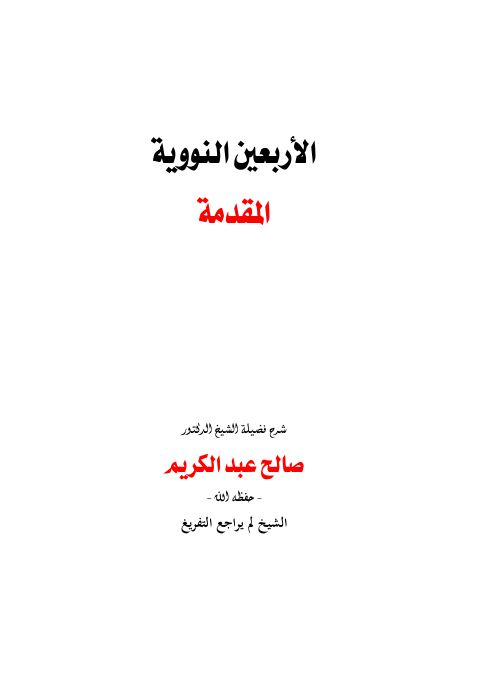

شرح الأربعين النووية
Authors: صالح عبد الكريم البلوشي
Publishers: دروس مفرغة
Download Downloads need an internet connection. Read in the library
- Edition
- 1
- Volumes
- 1
- Pages
- 192
- Type
- كتاب
- Category
- الحديث وعلومه
Description
▫️ العنوان: شرح الأربعين النووية ▪️ المؤلف: #صالح_عبد_الكريم ▫️ الناشر: #دروس_مفرغة ▪️ الطبعة: 1 ▫️ عدد الأجزاء: 1 ▪️ الصفحات: 192 ▫️ نوع الوعاء: #كتاب ▪️ التصنيف الرئيسي: #الحديث_وعلومه ۪